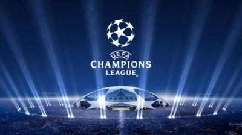
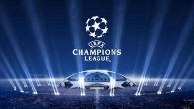
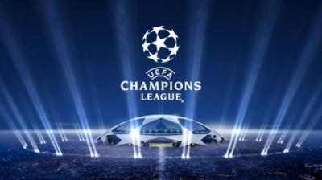
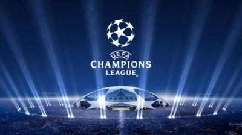

Федерация футбола Украины основана 13 декабря 1991. Первым его председателем был избран Виктор Банников.
В следующем, 1992 году, ФФУ стала членом УЕФА и ФИФА. Именно тогда началась подготовка к первому матчу сборной.
Сначала главным тренером команды планировалось назначить Валерия Лобановского, который в то время был тренером сборной ОАЭ,
и его действующий контракт с арабами помешал этому. Таким образом, первого наставника национальной команды пришлось
выбирать из числа членов тренерского совета, в который вошли: Анатолий Пузач /«Динамо» (Киев)/, Евгений Кучеревский
/«Днепр»/, Евгений Лемешко /«Торпедо» (Запорожье)/, Ефим Школьников /«Буковина» (Черновцы)/ и Виктор Прокопенко /«Черноморец» (Одесса)/.
Чуть позже к ним присоединился Валерий Яремченко /«Шахтёр» (Донецк)/. Но затем круг претендентов сузился до трёх: Пузач, Яремченко и Прокопенко.
Последний и стал первым главным тренером сборной Украины.
Виктор Прокопенко — первый главный тренер сборной Украины
После распада СССР в 1991 году решением ФИФА сборная России заняла место сборной СССР в отборочном турнире к чемпионату мира 1994 года.
В связи с этим, некоторые украинские футболисты, выступавшие в тот момент за различные сборные СССР/СНГ[4],
видя для себя лучшие возможности для карьеры в российской, нежели в украинской сборной, приняли решение выступать за сборную России.
Это, а также большое количество футболистов, завершающих карьеру, которые приносили славу советскому и украинскому футболу в 1980-х годах,
привело к некоторому кризису в украинском футболе начала 1990-х годов. Кроме того, все набранные очки клубами и сборной СССР в пятилетней таблице УЕФА
и в рейтингах ФИФА, посредством решений УЕФА и ФИФА перешли в зачёт сборной России.
Первую игру сборной Украины было решено провести против сборной Венгрии 22 апреля 1992 в Киеве на Республиканском стадионе.
Однако из-за финансовых трудностей ФФУ, игру перенесли ближе к границе с Венгрией — в Ужгород. Так, 29 апреля 1992 года на
стадионе «Авангард» в Ужгороде впервые в истории сборная Украины сыграла свой матч.
Подготовка к матчу практически не проводилась. Лишь 27 апреля все «первооткрыватели» собрались в Киеве, чтобы на следующий
день самолетом отправиться в Ужгород. Между тем соперник, хоть и не пробился в финальную часть европейского первенства 1992,
всё же планировал пробиться из отборочного турнира на чемпионат мира 1994 года, двери на который для украинцев были закрыты,
поэтому готовились к встрече в Ужгороде гораздо тщательно. В этом матче был забит первый гол в истории сборной Украины.
Его автором стал Иван Гецко.1993—1994гг.
Первую игру отбора к ЧМ 2014, против Англии на Уэмбли подопечные Блохина провели достаточно уверенно и завершили матч вничью 1:1. 25 сентября 2012 Олег Блохин
возглавил киевское «Динамо», и по договоренности с ФФУ должен подготовить сборную к двум следующим поединкам отбора против Молдавии и Черногории. Однако,
5 октября 2012 Блохин был госпитализирован в больницу с диагнозом гипертонический криз, он был прооперирован из-за тромбоза левой сонной артерии,
и на две недели он выбыл из футбола. На место и. о. главного тренера был назначен помощник Блохина — Андрея Баля, именно он руководил жёлто-синими
в двух следующих поединках отбора. Оба матча команда провела крайне неудачно, сначала сыграв вничью 0:0 с Молдавией, а затем 16 октября вообще проиграла
дома Черногории 0:1. Таким образом, осенью часть отбора в своей группе Украина с 2 очками завершила на предпоследнем, пятом месте, опережая лишь Сан-Марино.
Перед последним матчем в 2012 году — товарищеской игрой против Болгарии ФФУ назначил и. о. главного тренера Александра Заварова. Под его руководством
Украина одержала победу со счётом 1:0.
Президент ФФУ Анатолий Коньков предложил Андрею Шевченко возглавить команду, но он после недели раздумий отказался от этого предложения.
Также проводились переговоры с английским тренером Гарри Реднаппом, но тот получил и принял предложение от клуба «Куинз Парк Рейнджерс».
26 декабря 2012 на заседании исполкома ФФУ решался вопрос назначения главного тренера команды. Основными претендентами были швед Свен-Горан Эрикссон
и украинский специалист Михаил Фоменко. Единогласно тренером решено назначить Михаила Фоменко. В первой игре под его руководством сборная Украины 6 февраля 2013
одержала победу над Норвегией 2:0. Официально же, Михаил Фоменко стартовал со сборной в сверхважном матче отбора в Варшаве против Польши 22 марта 2013.
Национальном стадионе Украина уже в первые 8 минут забила два мяча. Поляки смогли отыграть 1 гол на 18 минуте и в течение первого тайма активно пытались
сравнять счёт, однако гол Романа Зозули на 45 минуте окончательно похоронил надежды польской команды на положительный результат. Таким образом Украина
победила 3:1 и вернулась в борьбу за путевку на турнир. В следующей игре Украина победила в Одессе Молдавию 2:1 и после половины сыгранных матчей набрала
8 очков и занимала 4-ю позицию в своей отборочной группе. 7 июня 2013 состоялся матч между Черногорией и Украиной, в котором Украина разгромила соперников
со счётом 4:0. 6 сентября во Львове на Арене Львов сборная Украины установила новый личный рекорд, одержав самую крупную победу в истории. Команда Фоменко
разгромила Сан-Марино 9:0. Через 4 дня Украина снова сыграла вничью в матче против Англии.
Через месяц сборная сыграла в Харькове против Польши и победила со счетом 1:0. 15 октября 2013 года состоялся последний тур в отборочной группе, сборная Украины
сохраняла шанс на то, чтобы занять первое место в группе и напрямую выйти на Чемпионат мира 2014, однако для этого, надо было не только победить Сан-Марино,
но и надеяться на то, что поляки смогут отобрать очки у Англии. Со своей задачей команда Фоменко справилась — крупнейшая в истории выездная победа — 8:0.
Кроме того, первый в истории сборной хет-трик в одном матче (в исполнении Марко Девича). А вот поляки англичанам проиграли 0:2. Таким образом Англия завершила
отбор на первом месте и автоматически получила путевку на ЧМ, сборная Украины — вторая, и в пятый раз в истории пробовать квалифицироваться на футбольный
чемпионат через квалификационные матчи.
21 октября в штаб-квартире ФИФА в Цюрихе прошла церемония жеребьёвки раунда плей-офф Кубка мира по футболу 2014 в Бразилии. Согласно октябрьскому рейтингу ФИФА,
сборная Украины вошла в 20-ку сильнейших футбольных сборных мира, поэтому попала в корзину сеяных команд. Среди потенциальных соперников Украины были: Франция,
Швеция, Хорватия и Исландия. Известный в прошлом нападающий сборной Швейцарии по футболу Александр Фрай вытащил для сборной Украины шарик с национальной командой Франции.
Стыковые матчи состоялись 15 и 19 ноября. Соответственно, первый поединок сборная Украины провела дома.
В первом матче Роман Зозуля открыл счёт 61 минуте, а на 82 минуте ещё и заработал пенальти, который забил Андрей Ярмоленко. Этот матч стал для сборной Украины первой
победой над сборной Франции. В ответном матче сборная Украины уступила французской сборной со счётом 0:3, плохо сыграв как в защите, так и в нападении. Таким образом,
Украина в пятый раз проиграла плей-офф за выход на чемпионаты мира и Европы и стала первой европейской командой, которая не прошла чемпионат мира, имея после первого
матча преимущество в два мяча.
В декабре 2013 года сборная Украины получила от ФИФА звание самой прогрессирующей команды года в мировом футболе. В ФИФА подсчитали, что за год команда поднялась в
рейтинге на 29 позиций и впервые стала обладателем приза «Прогресс года»[5].
Отбор к чемпионату Европы 2016.
Свой 23 сезон сборная Украины начала с товарищеского матча 5 марта 2014 против сборной США. Он закончился победой команды Фоменко со счетом 2:0. Далее были
товарищеские матчи против сборных Нигера и Молдавии, они также завершились победами.
Сборная Украины перед первым матчем со Словенией
8 сентября Украина сыграла первый отборочный поединок и уступила Словакии со счётом 0:1, в результате чего сборная Украины занимала в группе предпоследнее место.
Через месяц, 9 октября сине-желтые победили на выезде сборную Белоруссии. Через три дня, сборная Украины победила во Львове сборную Македонии. 15 ноября Украина
победила Люксембург 3:0, продемонстрировав не слишком качественную игру. Однако, во второй раз в истории сборной Украины, в исполнении Андрея Ярмоленко был
забит хет-трик. 18 ноября был сыгран вничью товарищеский матч против Литвы со счётом 0:0.
27 марта 2015 сине-желтые минимально проиграли Сборной Испании. Через 3 дня было сыграно вничью в товарищеском матче с Латвией во Львове. 9 июня на стадионе
«Линцер Штадион» в Линце (Австрия) была одержана победа в товарищеском матче с грузинами — 2:1. 14 июня сборная Украины победила в Львове сборную Люксембурга
со счетом 3:0. Осенью сборная Украины победила во Львове сборную Белоруссии со счетом 3:1. Далее, в Жилине, Словакия, сине-желтые сыграли вничью со сборной Словакии.
За месяц, 9 октября в Скопье, столице БЮР Македонии, команда Фоменко выиграла у хозяев со счетом 2:0. В тот же день, сборная Белоруссии победила на выезде
сборную Словакии, что дало сборной Украины шанс пройти на Евро без участия в плей-офф. Для этого нужно было обыграть дома сборную Испании и надеяться на
ничью в матче Люксембург — Словакия. Однако, из-за поражения дома 0:1 и победу словаков 2:4 в игре с Люксембургом, сине-желтые вынуждены были в очередной
раз играть в плей-офф.
18 октября в швейцарском Ньоне состоялась жеребьевка плей-офф. Поскольку Украина попала в сеяных команд, ее потенциальными соперниками были: Норвегия,
Словения, Ирландия, Дания. После жеребьевки плей-офф соперником сборной Украины стала сборная Словении (с которой уже были встречи 13 и 17 ноября 1999
на отбор к Евро-2000). 14 ноября во Львове подопечные Фоменко выиграли 2:0 — сначала на 22 минуте Андрей Ярмоленко открыл счёт, а на 60 минуте забил Евгений Селезнев.
17 ноября в словенском Мариборе была зафиксирована ничья 1:1 — в первом тайме забил капитан хозяев Боштьян Цесар, но в конце игры, на 90+7 минуте,
Андрей Ярмоленко с передачи Артема Кравца сравнял счёт. Таким образом, по результатам двух матчей плей-офф, Украина во второй раз попадает на Чемпионат
Европы по футболу.
Финальный турнир чемпионата Европы 2016 года.
Марка Украины, посвящённая сборной Украины по футболу 2016 г.
Жеребьёвка финального турнира чемпионата Европы состоялась 12 декабря 2015 года в Париже.
Сборная Украины сыграла в группе C со сборными Германии, Польши и Северной Ирландии.
17 июня 2016 года Украина потеряла все шансы на продление борьбы на Евро-2016. После проигрыша украинских футболистов Северной Ирландии со
счетом 0:2, Германия и Польша сыграли вничью — 0:0. Таким образом, в группе С Германия и Польша зарабатывают по 4 очка, Северная Ирландия — 3 очка.
А сборная Украины заняла последнее место и даже следующая игра с Польшей уже не изменит ситуации. Украинцы стали худшей сборной на чемпионате Европы 2016 года[6].
20 июня 2016 года главный тренер национальной сборной Украины по футболу Михаил Фоменко обратился к болельщикам украинской команды и попросил у них прощения
за неудачное выступление «сине-желтых» на чемпионате Европы[7]. 21 июня 2016 года Национальная сборная Украины проиграла сборной Польши 0:1 и в третьем туре
группового турнира чемпионата Европы по футболу во Франции[8]. Украинцы разочаровались в игре сборной Украины на футбольном чемпионате Евро-2016 и многие
не пришли болеть за сборную во время последнего матча на чемпионате[9].